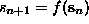
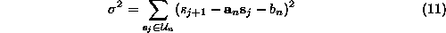
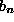
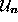
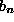
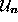
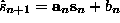
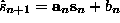
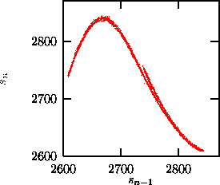
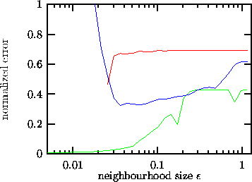

If there is a good reason to assume that the relation  is
fulfilled by the experimental data in good approximation (say, within 5%) for
some unknown f and that f is smooth, predictions can be improved by
fitting local linear models. They can be considered as the local Taylor
expansion of the unknown f, and are easily determined by minimizing

with respect to  and , where  is the
and , where  is the
 -neighborhood of
-neighborhood of  , excluding
, excluding  itself, as before. Then,
the prediction is . The minimization problem can
be solved through a set of coupled linear equations, a standard linear algebra
problem. This scheme is implemented in onestep. For moderate noise levels
and time series lengths this can give a reasonable improvement over zeroth
and predict. Moreover, as discussed in Sec.
itself, as before. Then,
the prediction is . The minimization problem can
be solved through a set of coupled linear equations, a standard linear algebra
problem. This scheme is implemented in onestep. For moderate noise levels
and time series lengths this can give a reasonable improvement over zeroth
and predict. Moreover, as discussed in Sec. , these linear maps
are needed for the computation of the Lyapunov spectrum. Locally linear
approximation was introduced in [45, 46]. We should note that the
straight least squares solution of Eq.(
, these linear maps
are needed for the computation of the Lyapunov spectrum. Locally linear
approximation was introduced in [45, 46]. We should note that the
straight least squares solution of Eq.( ) is not always
optimal and a number of strategies are available to regularize the problem if
the matrix becomes nearly singular and to remove the bias due to the errors in
the ``independent'' variables. These strategies have in common that any
possible improvement is bought with considerable complication of the procedure,
requiring subtle parameter adjustments. We refer the reader to
Refs. [51, 52] for advanced material.
) is not always
optimal and a number of strategies are available to regularize the problem if
the matrix becomes nearly singular and to remove the bias due to the errors in
the ``independent'' variables. These strategies have in common that any
possible improvement is bought with considerable complication of the procedure,
requiring subtle parameter adjustments. We refer the reader to
Refs. [51, 52] for advanced material.
In Fig.  we show iterated predictions of the
Poincaré map data from the CO
we show iterated predictions of the
Poincaré map data from the CO laser (Fig.
laser (Fig.  ) in a
delay representation (using nstep in two dimensions). The resulting data do
not only have the correct marginal distribution and power spectrum, but also
form a perfect skeleton of the original noisy attractor. There are
of course artefacts due to noise and the roughness of this approach,
but there are good reasons to assume that the line-like substructure
reflects fractality of the unperturbed system.
) in a
delay representation (using nstep in two dimensions). The resulting data do
not only have the correct marginal distribution and power spectrum, but also
form a perfect skeleton of the original noisy attractor. There are
of course artefacts due to noise and the roughness of this approach,
but there are good reasons to assume that the line-like substructure
reflects fractality of the unperturbed system.

Figure: Time delay representation of 5000 iterations of the local linear predictor nstep in two dimensions, starting from the last delay vector of Fig..
Casdagli [53] suggested to use local linear models as a test
for nonlinearity: He computed the average forecast error as a
function of the neighborhood size on which the fit for  and is
performed. If the optimum occurs at large neighborhood sizes, the data are (in
this embedding space) best described by a linear stochastic process, whereas an
optimum at rather small sizes supports the idea of the existence of a nonlinear
almost deterministic equation of motion. This protocol is implemented in the
routine ll-ar, see Fig.
and is
performed. If the optimum occurs at large neighborhood sizes, the data are (in
this embedding space) best described by a linear stochastic process, whereas an
optimum at rather small sizes supports the idea of the existence of a nonlinear
almost deterministic equation of motion. This protocol is implemented in the
routine ll-ar, see Fig.  .
.

Figure: The Casdagli test for nonlinearity: The rms prediction error of local linear models as a function of the neighborhood size. Lower (green) curve: The CO
laser data. These data are obviously highly deterministic in m=4 dimensions and with lag
=6. Central (blue) curve: The breath rate data shown in Fig.